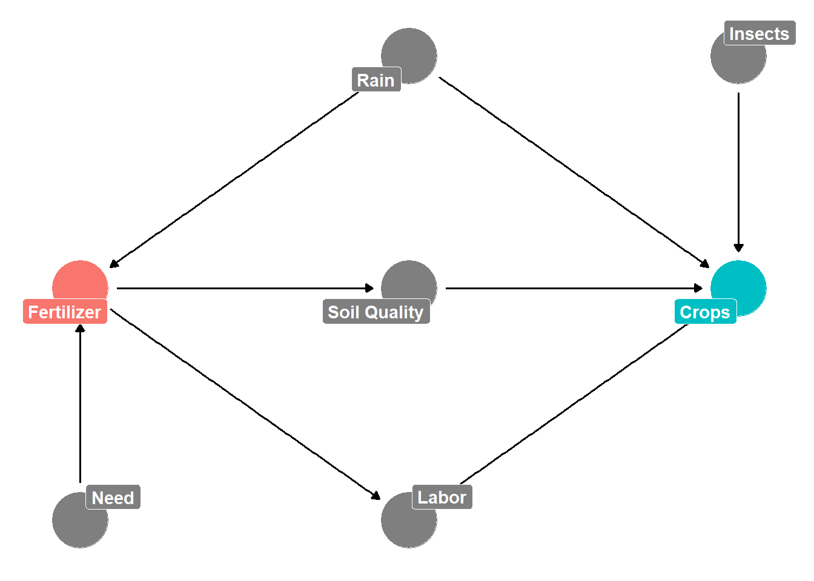

An introduction to DAGs, adjustment, and creating DAGs in R.
Author
Brian Lookabaugh
Published
February 16, 2023
What Are DAGs Used For?
Let’s start off with clarifying what “DAG” even means. In the prior blog post, I noted that it stood for “directed acyclic graph”, but I didn’t go into detail over what that mouthful means. It’s actually surprisingly simple. First of all, its a graph… easy enough. It is a directed graph because of the directions the arrows provide that imply a causal relationship. Lastly, it is acyclic because you can never end up at a node (the circles) once you have progressed beyond it. Simply put, there is no cycle in the directed graph. If A → B → C, then C cannot → A. If it does, the graph is cyclical and I’m sure this breaks all of the complicated math underlying DAGs.
Definition aside, what are DAGs used for? We talked about this a bit in the previous blog, but we will briefly review this again. First, recall from the previous post that confounding effects seriously complicate or eliminate our ability to infer causation (aka “to make causal inferences” or “to determine if a causal relationship exists”). But how do we know what is and what is not a confounding effect? You guessed it… DAGs! Real-world research questions get very complex very quickly, with dozens of variables and causal relationships to consider. It’s best we don’t burden our brain with figuring out which variables are confounders and which are not when DAGs can figure this out for us. Further, DAGs are great for clearly specifying causal assumptions that model and causal estimates are generated from (remember that DAGs don’t magically prove causation… they make clear causal assumptions). From a scientific perspective, this is great since it breaks down the “black box” of our own assumptions and allows our causal assumptions to be made clear, transparent, and available for critique and refinement. On a personal level, that may not feel so great. But for the purposes of quality scientific research, it is desperately needed.
Again, DAGs are great for identifying confounders, but there are many more effects than confounding effects and it is important that we identify these effects as well. Why is it so important? For one, speaking from the background that I come from, a culture of “controlling for everything” exists and is still fairly prominent in many literatures. Scholars will frequently make jokes about reviewers at scientific journals who will reject a paper because it isn’t controlling for some niche, seemingly insignificant variable. However, many scholars have pointed out that this culture of controlling for everything is harmful for the generation of accurate causal estimates (Rohrer 2018; Cinelli, Forney, and Pearl 2022). So what should be controlled (or “adjusted”) for and what shouldn’t?
Backdoor Adjustment
Before we can answer those questions, we need to be familiar with the concept of backdoor adjustment. By this point, you have already been exposed to backdoor adjustment from the last blog post. But we will review it again in detail here as well. A path is a “backdoor path” if a non-causal association can be transmitted between treatment and outcome indirectly. For example, A ← B → C introduces a backdoor path between A and C via B. A and C are not causally linked (there is no arrow linking A to C directly), but we can still witness a spurious (false) association between the two due to the influence of the pesky confounder, B. Backdoor adjustment is simply adjusting for these effects. If we adjust for B, then we eliminate its arrows that point into A and C. (I do not go into the math of how this works in these blog posts. If you are interested in an introduction to do-calculus, I suggest checking out “The Book of Why” by Judea Pearl). As a result, we eliminated the confounding bias of B. There’s actually another type of adjustment called “front-door adjustment” (but we will wait to discuss this in a future blog post discussing instrumental variables). What’s important now is to know that DAGs can clearly identify which variables need to be adjusted for via backdoor adjustment. Equally important, DAGs also tell us which variables do not need to be adjusted for. We’ll get into this in the following section.
The Big Five
DAGs are one of those topics that are best discussed with visuals (we are talking about graphs, after all). I am going to create a DAG that models the relationship between fertilizer and crop yield and then we’ll talk about “the Big Five” (this will make a lot more sense after the DAG is constructed). I’ll annotate the code so that you can follow along and create your own DAGs in R if you would like. If you’d like to follow along and don’t want to program in R, check out dagitty website which is a very intuitive tool to create your own DAGs online.
Code
library(tidyverse) # General Data Manipulationlibrary(dagitty) # Creating DAGslibrary(ggdag) # Plotting DAGsdag <-dagify(crops ~ rain + insects + soil_qual, # Specifying Causal Relationships soil_qual ~ fert, fert ~ need + rain, labor ~ fert + crops,exposure ="fert", # Defining Exposure/Treatment outcome ="crops", # Defining Outcomecoords =list(x =c(crops =5, rain =3, insects =5, soil_qual =3, # Customizing Placement of Nodesfert =1, need =1, labor =3),y =c(crops =3, rain =5, insects =5, soil_qual =3,fert =3, need =1, labor =1)),labels =c(crops ="Crops", rain ="Rain", insects ="Insects", # Customizing Names for Nodessoil_qual ="Soil Quality", fert ="Fertilizer",need ="Need", labor ="Labor"))tidy_dag <- dag %>%# Converting to a Tidy Object for Better Plottingtidy_dagitty() %>%node_status()ggplot(tidy_dag, aes(x = x, y = y, xend = xend, yend = yend)) +# Plotting and Customizing the DAGtheme_dag() +geom_dag_edges() +geom_dag_point(aes(color = status)) +geom_dag_label_repel(aes(label = label, fill = status),color ="white", fontface ="bold") +guides(color ="none", fill ="none")

First of all, I am not an expert in agriculture so I’m sure this model is not correct. Lucky for us, it doesn’t need to be. I just need to use this as an example. First, this model is much more complex than the DAGs in the previous blog. In reality, if I was truly interested in estimating the causal impact of fertilizer on crop yield, the DAG would most likely look even more complicated than this one! Still, this DAG is sufficient to discuss what I call “the Big Five” (this isn’t terminology used by anyone else… I’m just using it because the five effects we’ll be discussing appear to be among the most common that researchers identify when generating their own DAGs). Let’s go through each one-by-one:
Rain: “Rain” is our classic confounder that you should be familiar with by this point by glancing at the DAG. (Hint: We need to adjust for this fellow). Many fertilizers will not be functional without rain, and many farmers may not be willing to use fertilizer if they suspect rain is not coming anytime soon. Further, we all understand that rain - whether too little, just the right amount, or too much - has a clear causal impact on crop yields.
Soil Quality: From my understanding, different fertilizers do different things. Let’s say the fertilizer being examined here improves soil quality which, in turn, improves crop yields. In this respect, soil quality is a mediator. It is a bad idea to adjust for a mediator since the mediator is part of the causal process being examined. How silly is it to say, “I am going to estimate the causal impact of fertilizer on crop yield and control for… the causal effect of fertilizer on crop yield…”. If we adjust for soil quality, we are blocking the causal effect of fertilizer on crop yield in our own model. That is basically the opposite of what we are trying to accomplish.
Labor: Using increased fertilizer and having an increased amount of crop yield is going to cause a need for more labor. When the treatment and outcome both causally lead to another variable, this is called a collider. Adjusting for a collider can introduce a spurious relationship between treatment and outcome. A collider on its own does not open a backdoor path, but if we were to control for labor, we actually open the backdoor path! Many researchers may be familiar with a variant of controlling for colliders known as “selection bias”. Colliders should not be controlled for and “Labor” is a bad control in the case of this model. Where we see colliders, we should leave them alone.
Insects: Harmful insects are obviously going to impact crop yields. In this DAG, we are assuming that insects are neither caused by, nor cause, any other node specified in the DAG. Because “Insects” only effects the outcome, this variable is a neutral control. This means that the “Insects” variable neither opens (like adjusting for a collider does) nor closes (like adjusting for a confounder does) any backdoors. However, this particular type of neutral control, when included in a model, has the potential to improve the precision of a causal estimate (the numeric value stating how much X impacts Y).
Need: A farmer may be more likely to pursue the use of fertilizer if there is sufficient economic motive to do so. Perhaps, for this season, the family farm can only stay in operation if a good harvest is reaped in the fall. Because we are assuming that need only impacts the treatment, “need” is also a neutral control. However, unlike the former neutral control, adjusting for neutral controls that lead to treatment may lead to less precise causal estimates. As Cinelli, Forney, and Pearl (2022) note, a good rule-of-thumb is that neutral controls like “Insect” are generally beneficial to include while neutral controls like “Need” are generally harmful to include. In fact, I highly recommend using Cinelli, Forney, and Pearl (2022) as a reference. We only discuss five types of possible controls here, but their article covers 18 different types of controls and it is a great resource to examine whether a certain variable actually needs to be controlled for.
Which of these should we adjust for to understand whether fertilizer → crop yield? In this DAG (which may be inaccurate based on my poor prior agricultural information), the only variable in which it is necessary to control for is “Rain” since rain opens a back-door path between fertilizer and crop yield. If we ran a model with only fertilizer and crop yields specified, we may find that, as fertilizer increases, so do crop yields. However, we should be skeptical because we know that rain causes some change in both fertilizer usage and crop yield. If we fail to account for rain, the causal relationship between fertilizer and crop yield could be spurious (non-existent, even though it looks like it may exist) because of the back-door path: Fertilizer ← Rain → Crop Yield. Perhaps rain explains most (maybe all) of the variation in crop yield and fertilizer is just there for the ride. While not necessary, it is good practice to likewise adjust for “Insects” as well. Adjusting for insects won’t close any back-door paths like Rain did. However, it will make our causal estimate more precise.
Let’s say we run the following model: Crop Yield = Fertilizer + Rain. Let’s pretend that this model tells us that, for every 1% increase in fertilizer, crop-yield increases by 0.7%. Keep in mind, we have adjusted for rain, so we’re not super concerned about whether this relationship is spurious anymore. We’re pretty sure this effect is real and is not tainted somehow by an unobserved confounder. However, maybe that 0.7% estimate isn’t as precise as it could be? With causal inference, we want to know 1) is this causal relationship real or fake and 2) is the causal estimate precise? As discussed earlier, “Insects” can and should be included to improve the causal estimate. So we run the new model: Crop Yield = Fertilizer + Rain + Insects. Now, this model tells us that every 1% increase in fertilizer is associated with 0.78% increase in crop yield. A seemingly minor change, but it gets us closer to the true causal effect of fertilizer on crop yield. Again, this model is a product of a simplified understanding of the causal relationship linking fertilizer → crop yield. If you actually want to pursue this, you need to put a lot more time and research into agricultural research than I have. However, if we assume that the DAG I made is accurate (humor me, this is for educational purposes), then the model, Crop Yield = Fertilizer + Rain + Insects, is the appropriate model for causal inference.
However, as I’ve mentioned before, DAGs can get much more complicated than this. It is going to be tedious to try and isolate confounders on your own. Like anything else, let the computer do it for you. For example, we can run the following line of code to generate text output of the minimal adjustment set to close back-doors:
Code
adjustmentSets(dag)
{ rain }
By now, the introductory reader should know that associations/correlations are not sufficient to determine causation. Confounders are oftentimes the prime culprit for why associations fall short of causation. Confounders (what you should adjust for) and other types of variable (mediators, colliders, etc. - what you should not adjust for) can be identified with DAGs. When we adjust for the right things, we can move from evaluating correlations between variables to establishing causal relationships between variables. This is solid information that represents the bedrock of causal inference. However, so far, we’ve talked about “causal effects” very loosely and failed to appreciate the complexity of such a topic. What does a causal effect even mean and what is it supposed to represent? We cannot estimate causal effects for each individual unit (we cannot determine whether a single ear of corn was produced because of fertilizer) so how do we obtain causal effects in the first place? These questions will be discussed in the following blog post.
References
Cinelli, Carlos, Andrew Forney, and Judea Pearl. 2022. “A Crash Course in Good and Bad Controls.”SSRN Journal, 1–34. https://doi.org/10.2139/ssrn.3689437.
Rohrer, Julia M. 2018. “Thinking Clearly About Correlations and Causation: Graphical Causal Models for Observational Data.”Advances in Methods and Practices in Psychological Science 1 (1): 27–42.